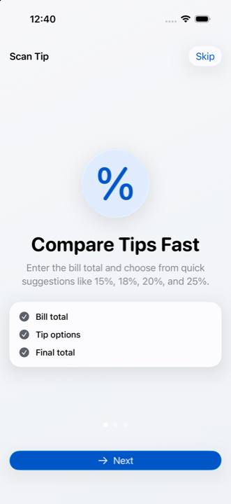
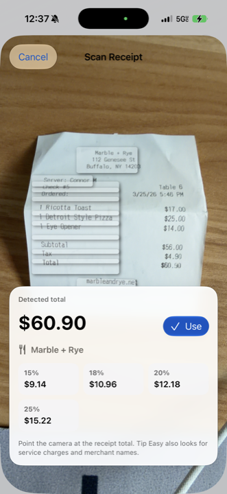
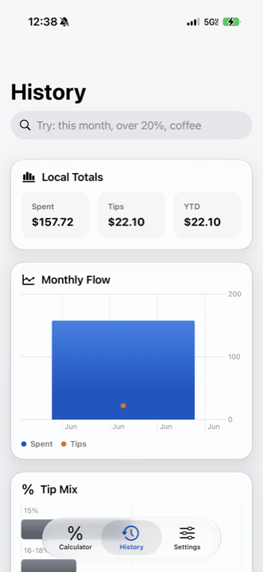
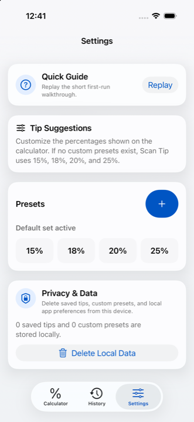

Flexible Tip Calculator
Use presets, a slider, or a custom percentage or dollar amount to find the right tip and total.
Scan Tip for iPhone and iPad
Scan Tip helps you enter a bill, scan receipts, choose a tip, review the total, and save useful dining history. Scan Tip Pro unlocks unlimited history, Smart Check insights, custom presets, history charts, export/share, and iCloud sync.
Product Video
App Preview




Use presets, a slider, or a custom percentage or dollar amount to find the right tip and total.
Scan receipts with the device camera to identify totals and flag possible service charges or included gratuity.
Save dining totals, review recent visits, and delete local data from the app whenever needed.
Upgrade once for unlimited saved history, Smart Check insights, custom tip presets, history charts, export/share, and iCloud sync.